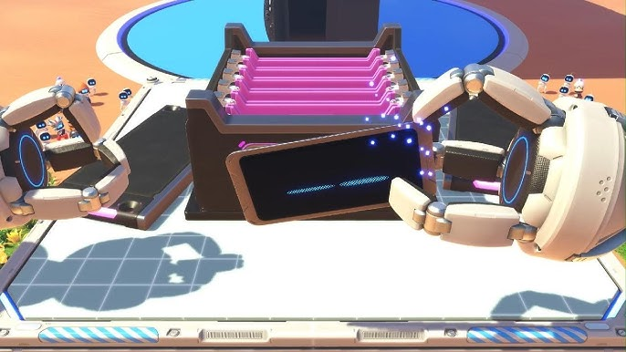
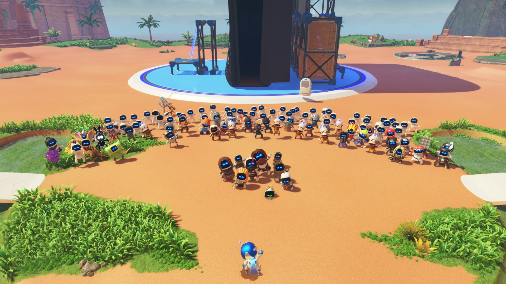

Astrobot is one of the best-feeling games on PlayStation and one of the only 3D platformers on the system. Like the demo before it, Astrobot makes great use of dual sense features, which was a highlight for me. I loved feeling all the different materials astro would walk on, and I spent much time seeing what I could interact with to give me that next hit of dual sense crack.
I was delighted to see it win Game of the Year at the Game Awards; particularly over other titles that had already been given their deserved praise the previous year (Erdtree). I loved that Astrobot knew exactly what its purpose was, which was to be a fun video game.
It was nice to see a game come out that was able to dodge gaming culture war discourse and just be a celebration of the history of PlayStation. You find all kinds of PlayStation collectibles, outfits (even a Jak outfit!), and even find parts to build a giant PS5 named the “Mothership” which you get to piece together using two giant robot arms and smash the pieces in with a mallet.
Even the main hub area has many areas to explore which you can navigate with the assistance of the hundreds of cute little robots in costumes that will form themselves into whatever you need to overcome an obstacle (if you’ve collected enough robots). As you play, you’ll begin to unlock new stores and fill up the main hub with cute robots in costume acting in-character scattered across the landscape.
A couple power ups were carried over from the last game; the monkey climber was one I wasn’t thrilled to see carried over, but thankfully you don’t have to spend a lot of time with those. There were other power ups that were a joy to use like the turning into a floating balloon with the octo-balloon or my favorite, shrinking to the size of a mouse with the micro mouse shrinker.
The level design was fantastic, taking you through numerous environments with big set pieces like the giant robot that you need to climb onto and helps you navigate the level.
Astrobot won game of the year this year for a reason, and I am fully in support of the voter’s decision. Astrobot will easily make my top 5 games of the year in 2024 and I’m excited to see what else the studio will put out in the future.
10/10
Matthew Sutton
I cover video games, which includes both console and PC games. I tend to gravitate to RPG's, looter shooters, hero shooters, and the occasional 4x or card game. I'm a big fan of the Witcher Series, the Destiny franchise, and I hope to make doing this a full time job one day.